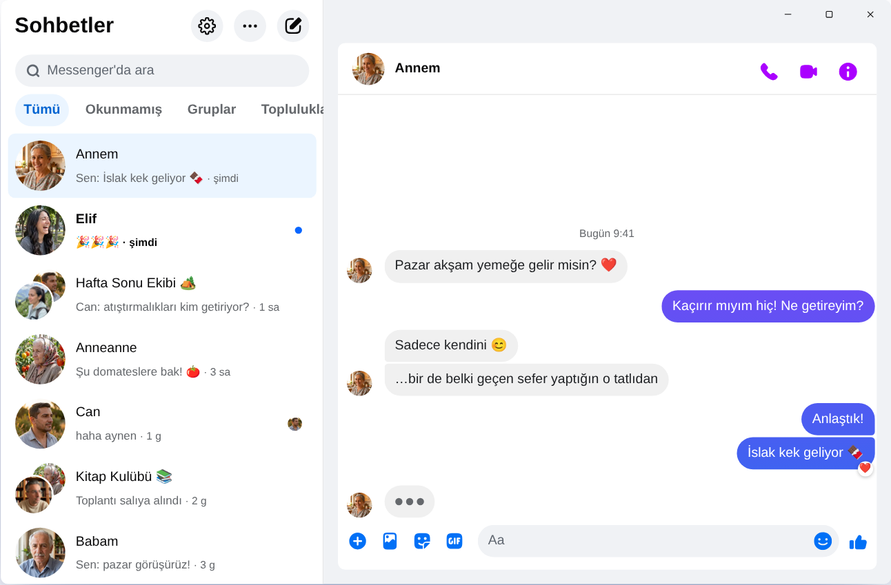

Chatpane / Windows
Kasım 2026'da güncellendi
Messenger bilgisayara nasıl indirilir? 2026'da işe yarayan yollar
Meta, Windows için Messenger uygulamasını 15 Aralık 2025'te kapattı, messenger.com da artık seni Facebook'a yönlendiriyor. Windows 10 veya 11 yüklü bir masaüstü ya da dizüstü bilgisayarda bugün işe yarayanlar burada.
Ücretsiz ve açık kaynak · Windows 10 ve 11 · Meta'nın uygulaması değildir
Kısa cevap
Bilgisayar için resmi bir Messenger uygulaması artık yok. Meta onu Microsoft Store'dan kaldırdı ve Nisan 2026'dan beri bilgisayarda Messenger yalnızca Facebook'un içinde, facebook.com/messages adresinde çalışıyor.
Messenger'ı akış ve Reels olmadan kendi penceresinde kullanmak istiyorsan, Chatpane yalnızca sohbetlerini açan ücretsiz ve açık kaynaklı bir Windows uygulamasıdır. Bağımsız bir projedir, Meta'ya ait değildir.
İndirme sitelerindeki “Messenger PC” kurulumlarına dikkat
Birçok eski rehber hâlâ Microsoft Store'da “Messenger” aramanı ya da indirme sitelerinden Messenger 2250.1 kurulum dosyasını indirmeni söylüyor. Bunun hiçbir faydası yok: bu, Meta'nın Aralık 2025'te kapattığı uygulamanın ta kendisi ve açıldığında seni yalnızca Facebook'a gönderiyor.
Facebook şifreni de nereden geldiğini bilmediğin bir programa ya da sayfaya yazma. Biri sana kendi giriş ekranı olan bir “Messenger PC” sunuyorsa dikkatli ol.
Windows için Messenger'a ne oldu?
Meta, 2024'te Windows uygulamasını paketlenmiş bir web sürümüyle değiştirdi. Ekim 2025'te kapatılacağını duyurup uygulamayı Microsoft Store'dan kaldırdı ve uygulama 15 Aralık 2025'te çalışmayı bıraktı. Nisan 2026'da messenger.com da kapandı. Ayrıntılar ve tarihler Messenger masaüstü uygulaması kapandı sayfasında.
Seçeneklerin
Windows'ta Messenger kullanmanın yolları
Windows'ta Chatpane
Chatpane, tarayıcıda gördüğün Messenger'ın aynısını açar. Bu yüzden tüm sohbetlerin, grupların, aramaların ve fotoğrafların yerinde durur ve telefonunla senkronize olur. Kaldırdığı tek şey Facebook'un geri kalanıdır.
- Sadece Messenger. Facebook'un akışı, Reels, Marketplace ve arama bölümü gizlenir.
- İşe yarayan bildirimler. Pencereyi açmadan bildirimden yanıtla, tepki ver, okundu olarak işaretle ya da sessize al. WhatsApp'ta yazışıp Messenger'dan gelen mesajları kaçırmak istemiyorsan tam sana göre.
- Görev çubuğu ve sistem tepsisi. Simgede okunmamış mesaj sayısı, Windows ile birlikte başlatma ve pencereyi kapattığında sistem tepsisinde çalışmaya devam etme seçeneği.
- Gizlilik. Yazdığını gizle, ekran paylaşırken adları ve profil resimlerini gizle, Facebook'un analiz isteklerini engelle (varsayılan olarak açık).
- Türkçe. Chatpane bilgisayarının dilini kullanır, bu yüzden menüleri ve ayarları Türkçe görünür.

Nasıl kurulur
- Windows kurulum dosyasını indir. Bilgisayarında ARM işlemci varsa ARM64 kurulum dosyasını kullan.
- Dosyayı aç. Chatpane'in Windows kurulum dosyaları henüz dijital olarak imzalı değil, bu yüzden SmartScreen “Windows kişisel bilgisayarınızı korudu” uyarısı gösterebilir. Önce “Ek bilgi”, sonra “Yine de çalıştır” seçeneğine tıkla. Chatpane'i yalnızca chatpane.app veya GitHub'dan indir.
- Her zamanki Facebook hesabınla giriş yap. Sohbetlerin hemen görünür.
Hiçbir şey kurmak istemiyor musun? Taşınabilir sürüm (.zip) kurulum gerektirmeden çalışır.
Sık sorulan sorular
Bilgisayarda Messenger hakkında sorular
Chatpane ücretsiz mi?
Evet. Ücreti, aboneliği ya da reklamı yok. MIT lisanslı açık kaynak bir uygulama ve kodu herkesin inceleyebilmesi için GitHub'da yayınlanıyor.
Resmi Messenger uygulaması mı?
Hayır. Chatpane, Meta ile bağlantısı olmayan bağımsız bir proje. facebook.com/messages adresindeki gerçek Messenger'ı kendi penceresinde gösterir. Yani mesajların yine Messenger üzerinden gider ve Meta'nın koşulları geçerlidir.
Facebook hesabım yoksa çalışır mı?
Hayır. Nisan 2026'dan beri Meta, Facebook hesabı olmadan Messenger kullanmaya yalnızca telefon uygulamasında izin veriyor. Bilgisayarda Chatpane dahil her yol, facebook.com'a giriş yapabilen bir hesap gerektirir.
Windows 10'da çalışır mı?
Evet, Windows 10 ve 11'de çalışır. Chatpane, Windows 11'de zaten yüklü olan Microsoft Edge WebView2'yi kullanır. Windows 10'da eksikse kurulum dosyası onu indirir.
Görüntülü arama yapabilir miyim?
Evet. Bu, Messenger'ın tamamı. Sesli ve görüntülü aramalar, facebook.com'daki gibi kendi pencerelerinde açılır.
Chatpane'i edin
Ücretsiz ve açık kaynak. Saniyeler içinde iner - yalnızca yaklaşık 4 MB.
Daha eski bir Intel Mac mi? Intel .dmg
Sağlama toplamlarıyla birlikte tam liste
GitHub'da
- ya da brew install --cask kristofferR/tap/chatpane